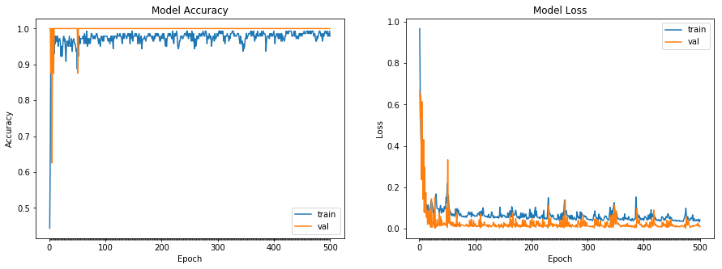

鸢尾花的分类
## 导包
import pandas as pd
import numpy as np
import matplotlib.pyplot as plt
import tensorflow as tf
from keras.utils import np_utils
from sklearn.preprocessing import LabelEncoder
from sklearn.model_selection import train_test_split
Using TensorFlow backend.
## 超参数
epochs=500
validation_split=0.05
test_size=0.25
dense1_neurons =512 #第一层神经元的数量
dense2_neurons =256 #第二层神经元的数量
dense3_neurons =128 #第三层神经元的数量
1.提出问题
根据整理好的鸢尾花数据集，能够进行三种鸢尾花的分类。
2.数据的收集和整理
2.1 导入数据集
datasets_path = 'data/iris.data'
iris = pd.read_csv(datasets_path,header=None)
print(iris.sample(5))
0 1 2 3 4
33 5.5 4.2 1.4 0.2 Iris-setosa
85 6.0 3.4 4.5 1.6 Iris-versicolor
135 7.7 3.0 6.1 2.3 Iris-virginica
64 5.6 2.9 3.6 1.3 Iris-versicolor
0 5.1 3.5 1.4 0.2 Iris-setosa
2.2 分割特征和标签
def print_ndarray_random_rows(array_name,rows=5):
'''
功能：输出numpy ndarray 的随机几行
参数：array_name 数组名称
rows 可选参数，不带入值时默认为5
'''
if array_name.ndim >1 :
print(array_name[np.random.choice(array_name.shape[0], rows, replace=False), :])
else:
print(array_name[np.random.choice(array_name.shape[0], rows, replace=False)])
return
# 转换为np.array
iris = np.array(iris)
print("\n=====数据集抽样显示=====")
print_ndarray_random_rows(iris)
# 提取特征
X= iris[:,0:4]
print("\n=====特征抽样显示=====")
print_ndarray_random_rows(X)
# 提取标签
Y = iris[:,4]
print("\n=====标签抽样显示=====")
print_ndarray_random_rows(Y)
=====数据集抽样显示=====
[[7.2 3.2 6.0 1.8 'Iris-virginica']
[4.7 3.2 1.6 0.2 'Iris-setosa']
[5.9 3.0 4.2 1.5 'Iris-versicolor']
[5.0 3.4 1.5 0.2 'Iris-setosa']
[4.6 3.4 1.4 0.3 'Iris-setosa']]
=====特征抽样显示=====
[[5.0 3.4 1.5 0.2]
[5.7 4.4 1.5 0.4]
[5.7 2.8 4.5 1.3]
[7.2 3.0 5.8 1.6]
[4.9 2.5 4.5 1.7]]
=====标签抽样显示=====
['Iris-virginica' 'Iris-virginica' 'Iris-virginica' 'Iris-versicolor'
'Iris-setosa']
2.3 将标签转化为one-hot编码
# 将文本型类别转为为数字型类别
encoder = LabelEncoder()
encoder_Y = encoder.fit_transform(Y)
print("\n=====标签数值化的结果=====")
print_ndarray_random_rows(encoder_Y)
# 转化为 one-hot 编码
dummy_y = np_utils.to_categorical(encoder_Y)
print("\n=====标签的one-hot编码=====")
print_ndarray_random_rows(dummy_y)
=====标签数值化的结果=====
[0 2 1 1 1]
=====标签的one-hot编码=====
[[0. 0. 1.]
[0. 1. 0.]
[1. 0. 0.]
[0. 1. 0.]
[0. 0. 1.]]
2.4 分割训练集和测试集
# 拆分训练集和测试集
X_train,X_test,y_train,y_test = train_test_split(X,dummy_y,test_size=test_size)
print("训练特征集的形状：" + str(X_train.shape))
print("训练标签集的形状：" + str(y_train.shape))
print("测试特征集的形状：" + str(X_test.shape))
print("测试标签集的形状：" + str(y_test.shape))
训练特征集的形状：(112, 4)
训练标签集的形状：(112, 3)
测试特征集的形状：(38, 4)
测试标签集的形状：(38, 3)
3.搭建模型
3.1 搭建模型
model = tf.keras.Sequential()
model.add(tf.keras.layers.Dense(units=dense1_neurons,input_dim=4,activation='relu'))
model.add(tf.keras.layers.Dense(units=dense2_neurons,activation='relu'))
model.add(tf.keras.layers.Dense(units=dense3_neurons,activation='relu'))
#model.add(tf.keras.layers.Dropout(dropout_rate))
model.add(tf.keras.layers.Dense(units=3,activation="softmax"))
model.summary() # 查看模型结构
_________________________________________________________________
Layer (type) Output Shape Param #
=================================================================
dense (Dense) (None, 512) 2560
_________________________________________________________________
dense_1 (Dense) (None, 256) 131328
_________________________________________________________________
dense_2 (Dense) (None, 128) 32896
_________________________________________________________________
dense_3 (Dense) (None, 3) 387
=================================================================
Total params: 167,171
Trainable params: 167,171
Non-trainable params: 0
_________________________________________________________________
3.2 编译模型
model.compile(loss='categorical_crossentropy', optimizer='adam',metrics=['accuracy'])
3.3 训练模型
history = model.fit(X,dummy_y,validation_split=validation_split,epochs=epochs)
Train on 142 samples, validate on 8 samples
Epoch 1/500
142/142 [==============================] - 1s 5ms/step - loss: 0.9674 - acc: 0.4437 - val_loss: 0.6660 - val_acc: 1.0000
Epoch 2/500
142/142 [==============================] - 0s 399us/step - loss: 0.6491 - acc: 0.6549 - val_loss: 0.5337 - val_acc: 1.0000
Epoch 3/500
142/142 [==============================] - 0s 188us/step - loss: 0.4673 - acc: 0.9648 - val_loss: 0.6438 - val_acc: 0.8750
Epoch 4/500
142/142 [==============================] - 0s 257us/step - loss: 0.3740 - acc: 0.8803 - val_loss: 0.2368 - val_acc: 1.0000
Epoch 5/500
142/142 [==============================] - 0s 198us/step - loss: 0.2972 - acc: 0.9366 - val_loss: 0.6141 - val_acc: 0.6250
Epoch 6/500
142/142 [==============================] - 0s 301us/step - loss: 0.2772 - acc: 0.9014 - val_loss: 0.3453 - val_acc: 1.0000
Epoch 7/500
142/142 [==============================] - 0s 329us/step - loss: 0.2424 - acc: 0.8944 - val_loss: 0.1428 - val_acc: 1.0000
Epoch 8/500
142/142 [==============================] - 0s 249us/step - loss: 0.1742 - acc: 0.9718 - val_loss: 0.4309 - val_acc: 0.8750
Epoch 9/500
142/142 [==============================] - 0s 350us/step - loss: 0.1854 - acc: 0.9296 - val_loss: 0.0789 - val_acc: 1.0000
Epoch 10/500
142/142 [==============================] - 0s 315us/step - loss: 0.1274 - acc: 0.9789 - val_loss: 0.2977 - val_acc: 1.0000
......
Epoch 490/500
142/142 [==============================] - 0s 210us/step - loss: 0.0491 - acc: 0.9859 - val_loss: 0.0130 - val_acc: 1.0000
Epoch 491/500
142/142 [==============================] - 0s 223us/step - loss: 0.0383 - acc: 0.9930 - val_loss: 0.0123 - val_acc: 1.0000
Epoch 492/500
142/142 [==============================] - 0s 227us/step - loss: 0.0378 - acc: 0.9930 - val_loss: 0.0158 - val_acc: 1.0000
Epoch 493/500
142/142 [==============================] - 0s 224us/step - loss: 0.0382 - acc: 0.9859 - val_loss: 0.0175 - val_acc: 1.0000
Epoch 494/500
142/142 [==============================] - 0s 247us/step - loss: 0.0433 - acc: 0.9859 - val_loss: 0.0187 - val_acc: 1.0000
Epoch 495/500
142/142 [==============================] - 0s 238us/step - loss: 0.0378 - acc: 0.9930 - val_loss: 0.0134 - val_acc: 1.0000
Epoch 496/500
142/142 [==============================] - 0s 218us/step - loss: 0.0418 - acc: 0.9789 - val_loss: 0.0260 - val_acc: 1.0000
Epoch 497/500
142/142 [==============================] - 0s 204us/step - loss: 0.0403 - acc: 0.9859 - val_loss: 0.0145 - val_acc: 1.0000
Epoch 498/500
142/142 [==============================] - 0s 283us/step - loss: 0.0458 - acc: 0.9789 - val_loss: 0.0120 - val_acc: 1.0000
Epoch 499/500
142/142 [==============================] - 0s 229us/step - loss: 0.0327 - acc: 0.9930 - val_loss: 0.0173 - val_acc: 1.0000
Epoch 500/500
142/142 [==============================] - 0s 189us/step - loss: 0.0415 - acc: 0.9789 - val_loss: 0.0089 - val_acc: 1.0000
4.评估模型
def plot_model_history(model_history):
'''
功能：根据history对象，绘制训练集和验证集上loss和acc的变化图
参数：history对象
来源：https://www.tensorflow.org/tutorials/keras/basic_classification?hl=zh-cn
'''
fig, axs = plt.subplots(1,2,figsize=(15,5))
# summarize history for accuracy
axs[0].plot(range(1,len(model_history.history['acc'])+1),model_history.history['acc'])
axs[0].plot(range(1,len(model_history.history['val_acc'])+1),model_history.history['val_acc'])
axs[0].set_title('Model Accuracy')
axs[0].set_ylabel('Accuracy')
axs[0].set_xlabel('Epoch')
axs[0].set_xticks(np.arange(1,len(model_history.history['acc'])+1),len(model_history.history['acc'])/10)
axs[0].legend(['train', 'val'], loc='best')
# summarize history for loss
axs[1].plot(range(1,len(model_history.history['loss'])+1),model_history.history['loss'])
axs[1].plot(range(1,len(model_history.history['val_loss'])+1),model_history.history['val_loss'])
axs[1].set_title('Model Loss')
axs[1].set_ylabel('Loss')
axs[1].set_xlabel('Epoch')
axs[1].set_xticks(np.arange(1,len(model_history.history['loss'])+1),len(model_history.history['loss'])/10)
axs[1].legend(['train', 'val'], loc='best')
plt.show()
plot_model_history(history)

# 使用测试集进行评估
model.evaluate(X_test,y_test)
38/38 [==============================] - 0s 271us/step
[0.007592696402417986, 1.0]
5.使用模型
target = model.predict(np.array([[7,5.5,6.5,3.9]])).argmax()
if target == 0:
print("Iris-setosa")
elif target == 1:
print("Iris-versicolor")
else:
print("Iris-virginica")
Iris-virginica